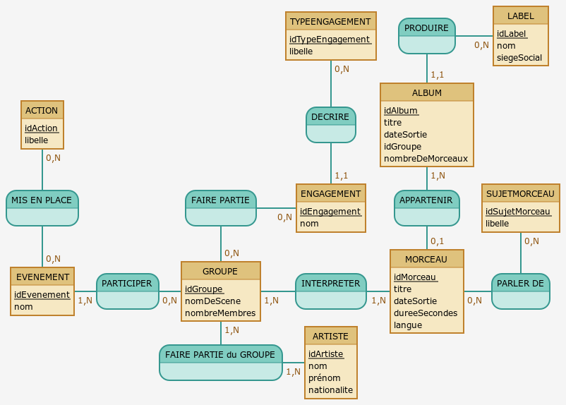

Bienvenue sur notre site web parlant de la musique en lien avec le Développement Durable
Pour notre projet de DSB, nous avons choisi de travailler sur le thème de la musique. Cela peut être
surprenant mais la musique peut aussi être liée au Développement Durable. Que ce soit dans les thèmes
abordés par les paroles ou dans les engagements des artistes, le domaine de la musique est lié aux
problématiques environnementales et sociales. Nous avons donc cherché à mettre en valeur ces élements avec
notre base de données.
Commençons pas présenter notre MCD (Modèle Conceptuel de Données) :
|  |
Nous avons choisi de centrer notre MCD autour de 2 entités principales : les
GROUPES et les MORCEAUX.
Un groupe interprète un ou plusieurs morceaux. Un
morceau peut faire partie d'un album, qui est produit par un label. Chaque morceau peut aussi
avoir un ou plusieurs sujets en lien avec le développement durable.
Une groupe est composé
d'un ou plusieurs artistes. Chaque groupe peut avoir participé à un évenement (ou plusieurs),
qui a pu mettre en place des actions en lien avec le développement durable. Chaque groupe peut
aussi être engagé auprès d'un type d'engagement particulier (ou plusieurs).
Pour simplifier
la représentation, nous avons pris la décision de représenter un artiste solo comme un groupe à
un seul membre. Ainsi l'entité ARTISTE donne l'état civil des membres d'un groupe.
Une
autre décision de notre part a été de considérer qu'un morceau ne peut appartenir qu'à un seul
album au plus. De plus, un single ne fait partie d'aucun album.
Vous trouverez dans
l'onglet Artistes un exemple d'interprétation de notre base de données. Toutes les
données utilisées ont été extraites de la base de données de la partie 1 du projet.
|